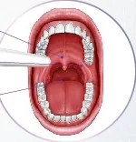

Why you snore
When you fall asleep, the muscles in your throat relax and the soft palate, the uvula and the tissue around them sag into your airway. Air going through the smaller gap makes the loose tissue flap and make the snoring sound. Snoring gets worse with age, alcohol, sleeping on your back and extra weight around the neck.
How the laser works
Snorelase uses an erbium laser (Er:YAG) in a mode that heats without cutting. Short pulses warm the lining of your mouth and throat without breaking the surface. The heat makes the collagen in the tissue shrink and tighten and starts new collagen growing over the next few weeks. Firmer tissue flaps less, so you snore more quietly, and imaging studies have measured a wider airway after treatment. Our doctor treats the soft palate, the inside of the cheeks and the base of the tongue.
Results from studies
The people in the 2022 trial didn't have significant sleep apnoea, and the fake treatment used a handpiece that blocked the laser. People rated the discomfort 3 out of 10 on average. Nobody needed an anaesthetic and there were no complications.
A review of 7 studies with 247 patients found that 80 percent were happy with the result. A review from 2025 found that the effect usually lasts 12 to 24 months, and 25 to 40 percent of people needed a top-up session to keep it. Another study of 40 patients treated with an Er:YAG laser at 2940 nm found that 97 percent were satisfied.
Snoring or sleep apnoea
Snoring can be a sign of obstructive sleep apnoea, where your airway closes completely and you stop breathing many times a night. Ask a doctor about a sleep test first if:
- someone has seen you stop breathing or gasp in your sleep
- you feel sleepy during the day after a full night in bed
- you wake up with headaches
- you have high blood pressure
In the review of 7 studies, snoring got quieter but the number of times people stopped breathing stayed about the same. Snorelase treats snoring and can't replace treatment for sleep apnoea.
We also treat people who already use a CPAP machine for sleep apnoea and still snore. Keep using the CPAP since the laser doesn't treat the apnoea itself.
Your sessions
You sit in the chair with safety glasses on, and the doctor moves the laser over your soft palate, the inside of your cheeks and the base of your tongue. Each session takes about 30 minutes and feels warm. You can eat and go back to work straight after, and your throat may feel dry or scratchy for a day or so.
Most people need 3 to 6 sessions. The doctor will tell you how far apart to book them.
Who it's for
Snorelase is for adults who snore because of a loose soft palate and throat. Snoring from a blocked nose or large tonsils needs a different treatment, and the doctor checks for both at your first visit.
Other ways to snore less
Some people snore less with a few simple changes. Try sleeping on your side, drinking less alcohol in the evening and losing weight if you carry extra weight around the neck. A mouth guard that holds your lower jaw forward while you sleep can also help. Surgery on the soft palate is the option when nothing else works, and a CPAP machine is the standard treatment for sleep apnoea.
Questions
Does it hurt?
It feels warm. People in the trial rated it 3 out of 10 and none of them needed an anaesthetic.
When will my partner notice?
Some couples notice a change after the first session. The full effect builds up over the course as new collagen forms.
How long does it last?
Usually 12 to 24 months. You can book a top-up session when the snoring starts to come back.
My partner says I stop breathing at night.
Get a sleep test before you book Snorelase since stopping breathing is a sign of sleep apnoea, which needs its own treatment.
Sources
- Apex Hospital & Clinics. Snorelase brochures, 2026.
- Picavet VA, Dellian M, Gehrking E, Sauter A, Hasselbacher K. Treatment of snoring using a non-invasive Er:YAG laser with SMOOTH mode (NightLase): a randomized controlled trial. Eur Arch Otorhinolaryngol. 2023;280(1):307-312. doi:10.1007/s00405-022-07539-9
- Neruntarat C, Khuancharee K, Shoowit P. Er:YAG laser for snoring: a systemic review and meta-analysis. Lasers Med Sci. 2020;35(6):1231-1238. doi:10.1007/s10103-020-02987-3
- Dembicka-Mączka D, Gryka-Deszczyńska M, Sitkiewicz J, Makara A, Fiegler-Rudol J, Wiench R. Effectiveness of the Er:YAG laser in snoring treatment based on systematic review and meta-analysis results. J Clin Med. 2025;14(12):4371. doi:10.3390/jcm14124371
- Apex Medical Center. SnoreLase page. apexmedicalcenter.co.th
Results vary from person to person. The doctor checks whether a treatment suits you at your consult.